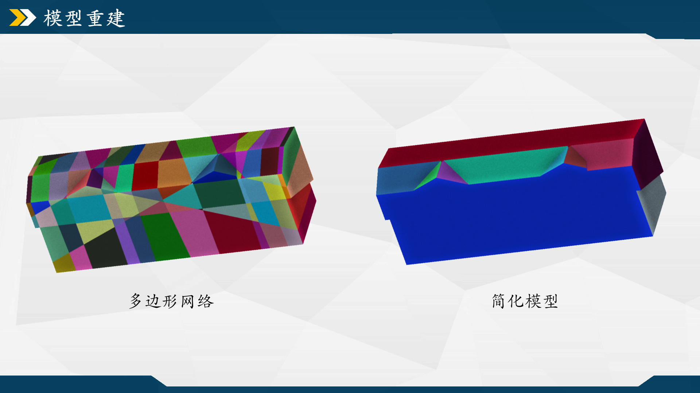
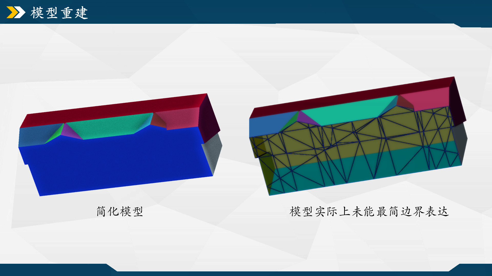

摘要：
CGAL面片合并；模型导出。
模型面片合并
这部分是一个收尾工作，旨在把上节得到的模型整理打扮下，尽量把近似同一平面系数的细碎面片合并为一整块，既简化模型面数也能提升可视化结果。程序封装在ReconstructProcess::MergePlane()，思路是先取到近似同平面系数的相邻面，再执行合并操作。函数的第一部分，通过CGAL的半边与对偶半边关系，取出model的两个相邻面，然后按自己的理解增加两个判断条件（可能有误），第一个判断避免出现“内嵌面”，可以想象成一个完整的饼被从外往内部重心切了一刀，这个多边形的内部就可能存在一个多余的边结构，以该边获取的对偶面就会是两个一样的面；第二个判断是避免取到模型的边界边，不过理论上model已是一个闭合的多边形网络，不太理解为何当时要多此一举，当做多加层保险吧。
1 | FT theta = cos(static_cast<FT>(CGAL_PI * 15.0 / FT(180.0)));//阈值_向量的内积（余弦值），大于该值则两平面近似平行 |
第二部分参考HypothesisPlaneProcess::PlaneRefine()，计算俩平面的法向量，向量内积后得到两者间的夹角，大于角度阈值的两者平面系数近似，调用 CGAL::Euler::join_face()将两个相近面片合并，且若本轮循环中发生过合并操作，跳出内部循环并重新遍历所有半边。一直迭代直至不再发生合并操作，完成模型的面去冗处理。
1 | //2、计算两个平面的正交向量并归一化 |
简化后的结果如下。不过在实测一些数据后，发现简化处理过程应该有些问题，可能有的微小面片会被莫名其妙地删去，可能是我把join_face放在循环中连续执行/该方法不适用于合并操作导致的。join_face能进行共面合并的依据来源于stackflow的一篇提问[26]。

此外，简化操作只是在可视化方面实现了简化，模型实际上未到最简边界表达（最小拓扑和几何复杂度的边界表示），仍还可以进一步做合并，关于这点可以将模型切换到线框模式下观察到。

模型导出
模型model的数据类型为CGAL::Surface_mesh<Kernel:: Point_3>，为便于在别的软件中显示，需要把数据以一种通用格式存储到本地。这里采用.obj格式，因为这类格式采用纯文本存储，可以直接用文本编辑器查看和编辑。obj格式一般可以分头部注释和数据块两个部分，注释部分为一行行以“#”开头的注释行，用于写入一些描述性信息，像是创建者、日期、模型简介等；数据块主要包含顶点（vertex）、纹理坐标（texture coordinate）、法向量（normal vector）和面（face）等数据，各个数据块之间按顺序存储，不需要特殊的标识符区分数据区域。
数据导出为obj格式的代码封装在FileProcess::SaveOBJ()，函数先调用std::ofstream打开输出文件流，在头部部分先写入一些注释信息，包括顶点、面和半边的数量。然后是输出顶点列表，每个顶点信息以字母“v”开头，后面跟随顶点的坐标。这里利用vertices(mesh)遍历多边形网络中的所有顶点，调用mesh.point(v)获取顶点的三维坐标。
最后输出面列表，每个面信息以 “f” 开头，后面列出构成该面的顶点索引。每条面数据先用vertices_around_face(mesh.halfedge(f), mesh)遍历面f周围的顶点，再通过get(CGAL::vertex_index, mesh)[v]获取每个顶点的索引。注意obj文件中的索引是从1开始，因此在输出时对索引加1。
1 | bool FileProcess::SaveOBJ(const std::string & path_output, const std::string & file_name, const CGAL::Surface_mesh<Kernel::Point_3>& mesh) |
设置颜色属性
为了丰富模型的可视化呈现，还可以额外输出一个.mtl文件，它是与.obj文件配套使用的材质库文件，用于描述三维模型中各个材质的属性。也是纯文本格式，便于定义和管理模型的视觉外观。
若要生成带有随机颜色的三维模型，可调用FileProcess::SaveColorOBJ()。函数的第一部分类似SaveOBJ()，也需要先输出一个obj格式的文件，稍有不同的是，紧接在头部注释后面要多加一行以“mtllib”开头的数据块，表明渲染器在加载.obj文件时要同时加载对应的.mtl文件。
1 | //... |
在生成obj文件后，接着去生成材质库文件mtl。先通过newmtl关键字声明一个新材质，并为其指定一个名称“color + num_idx”。然后设置三条基本的材质属性，分别是环境光Ka、漫反射Kd和镜面反射Ks，它们分别定义材质在环境光、直射光下的颜色，以及材质的高光颜色。这里Ka和Kd设置随机颜色，Ks按喜好取了个不那么刺眼的。
1 | //2、输出文件.mtl |
除了这三个属性，还有别的像透明度（Dissolve）、光泽度（Specular Exponent）、纹理映射等属性可供设置，以后有需要再问问GPT。
参考文献&引用
[1] https://3d.bk.tudelft.nl/liangliang/
[2] https://3d.bk.tudelft.nl/liangliang/publications/2017/polyfit/polyfit.html
[3] https://www.youtube.com/watch?v=_0brfDFkIkc
[4] Linfu X ,Han H ,Qing Z , et al. Combined Rule-Based and Hypothesis-Based Method for Building Model Reconstruction from Photogrammetric Point Clouds [J]. Remote Sensing, 2021, 13 (6): 1107-1107.
[5] Nan L , Wonka P .PolyFit: Polygonal Surface Reconstruction from Point Clouds[C]//International Conference on Computer Vision.IEEE, 2017.
[6] https://github.com/Kitware/CMake/releases/download/v3.29.3/cmake-3.29.3-windows-x86_64.zip
[7] https://boostorg.jfrog.io/artifactory/main/release/1.85.0/source/boost_1_85_0.7z
[8] https://github.com/CGAL/cgal/releases/download/v5.6.1/CGAL-5.6.1.zip
[9] https://gitlab.com/libeigen/eigen/-/archive/3.4.0/eigen-3.4.0.zip
[10] https://scipopt.org/download.php?fname=SCIPOptSuite-9.0.0-win64-VS15.exe
[11] https://zenodo.org/records/4390295#.Y0eIodJBxuV
[12] https://www.zhihu.com/question/277599635/answer/2149719454
[13] https://zhuanlan.zhihu.com/p/668272208
[14] https://doc.cgal.org/latest/Polygonal_surface_reconstruction/index.html#Chapter_PolygonalSurfaceReconstruction
[15] https://zhuanlan.zhihu.com/p/90858099
[16] https://zhuanlan.zhihu.com/p/668272208
[17] https://doc.cgal.org/latest/HalfedgeDS/index.html
[18] https://segmentfault.com/q/1010000043819426
[19] https://doc.cgal.org/latest/BGL/group__PkgBGLEulerOperations.html#gaa386d0cdef3b5d6ef43d6b503392dbcd
[20] https://doc.cgal.org/latest/Shape_regularization/index.html
[21] https://doi.org/10.3390/rs13061107
[22] https://doi.org/10.1016/j.isprsjprs.2022.09.017
[23] https://blog.csdn.net/u013279723/article/details/106265948
[24] https://www.gurobi.com/resources/mixed-integer-programming-mip-a-primer-on-the-basics/
[25] https://docs.mosek.com/modeling-cookbook/mio.html
[26] https://github.com/LiangliangNan/PolyFit/issues/30
[27] https://stackoverflow.com/questions/55162520/merge-adjacent-and-co-planar-faces